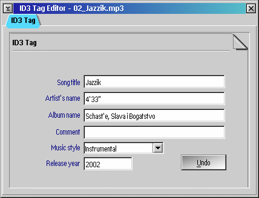
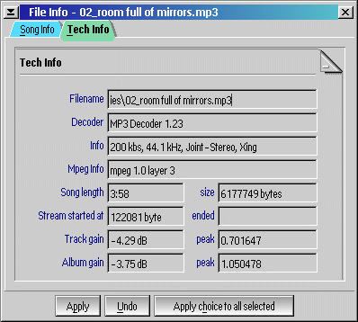

PM123's file info editor is quite simpled. It can be invoked for the current file from the main menu or by pressing Ctrl+E on the player window. You can also edit the info of the files in the playlist by right clicking a file in the playlist and selecting Edit file info or by pressing Ctrl+E in the playlist.
You also can set the info for several files at once. Select more than one files in playlist, invoke File Info Editor, fill the necessary fields, select choices on the right and press the Apply choice to all selected.
Also you can see some technical info about selected file.
